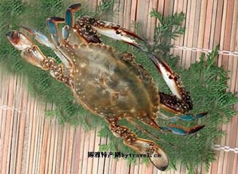
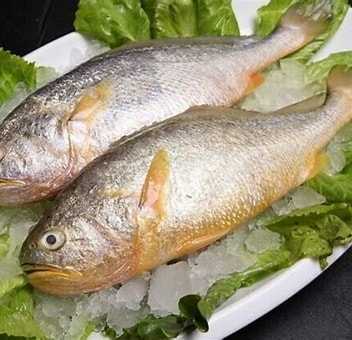

梭子蟹
梭子蟹，学名“蝤蛑”，有些地方俗称“白蟹”。因头胸甲呈梭子形，故名。甲壳的中央有三个突起，所以又称“三疣梭子蟹”。雄性脐尖而光滑，螯长大，壳面带青色；雌性脐圆有绒毛，壳面呈赭色，或有斑点。梭子蟹肉肥味美，有较高的营养价值和经济价值，且适宜于海水暂养增肥。头胸甲梭形，宽几乎为长的2倍；头胸甲表面覆盖有细小的颗粒，具2条颗粒横向隆堤及3个疣状突起；额具2只锐齿；前侧缘具9只锐齿，末齿长刺状，向外突出。螯脚粗壮，长度较头胸甲宽长；长节棱柱形，雄性长节较修长，前缘具4锐棘。 梭子蟹，俗称梭子蟹、白蟹，属于甲壳纲、十足目、梭子蟹科，是中国沿海的重要经济蟹类。其生长迅速，养殖利润丰厚，已经成为中国沿海地区重要的养殖品种。梭子蟹一般在3-5 梭子蟹1米深海底生活及繁殖，冬天移居到10-30米的深海，喜在泥沙底部穴居。

象山大黄鱼
大黄鱼黄鱼分布于黄海中部以南至琼州海峡以东的中国大陆近海及朝鲜西海岸。雷州半岛以西也偶有发现。中国沿海的大黄鱼可分为3个种群:①东海北部、中部群。分布于黄海南部至东海中部，包括吕泗洋、岱衢洋、猫头洋、洞头洋至福建嵛山岛附近。②闽、粤东群。主要分布在东海南部、台湾海峡和南海北部（嵛山岛以南至珠江口）。这一种群又分为北部和南部两大群体。③粤西群。主要分布于珠江口以西至琼州海峡的南海区。生物习性 大黄鱼为暖温性近海集群洄游鱼类,主要栖息于80米以内的沿岸和近海水域的中下层。产卵鱼群怕强光,喜逆流,好透明度较小的混浊水域。黎明、黄昏或大潮时多上浮，白昼或小潮时下沉。成鱼主要摄食各种小型鱼类及甲壳动物（虾、蟹、虾蛄类）。生殖盛期摄食强度显著降低；生殖结束后摄食强度增加。幼鱼主食桡足类、糠虾、燐虾等浮游动物。